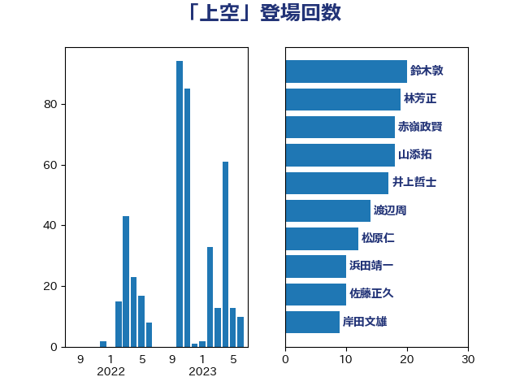

単語「上空」

| 鈴木敦 | 国民民主党 | 20 回 |
| 林芳正 | 自由民主党 | 19 回 |
| 赤嶺政賢 | 日本共産党 | 18 回 |
| 山添拓 | 日本共産党 | 18 回 |
| 井上哲士 | 日本共産党 | 17 回 |
| 渡辺周 | 立憲民主党 | 14 回 |
| 松原仁 | 立憲民主党 | 12 回 |
| 浜田靖一 | 自由民主党 | 10 回 |
| 佐藤正久 | 自由民主党 | 10 回 |
| 岸田文雄 | 自由民主党 | 9 回 |
| 宮本徹 | 日本共産党 | 9 回 |
| 石井苗子 | 日本維新の会 | 7 回 |
| 榛葉賀津也 | 国民民主党 | 7 回 |
| 斉藤鉄夫 | 公明党 | 7 回 |
| 徳永久志 | 無所属 | 7 回 |
| 吉良よし子 | 日本共産党 | 6 回 |
| 伊波洋一 | 無所属 | 6 回 |
| 緒方林太郎 | 無所属 | 5 回 |
| 神津たけし | 立憲民主党 | 5 回 |
| 室井邦彦 | 日本維新の会 | 5 回 |
| 稲富修二 | 立憲民主党 | 4 回 |
| 浅川義治 | 日本維新の会 | 4 回 |
| 岩本剛人 | 自由民主党 | 4 回 |
| 古賀之士 | 立憲民主党 | 4 回 |
| 高良鉄美 | 無所属 | 3 回 |
| 羽田次郎 | 立憲民主党 | 3 回 |
| 穀田恵二 | 日本共産党 | 3 回 |
| 柴田巧 | 日本維新の会 | 3 回 |
| 松野博一 | 自由民主党 | 3 回 |
| 末松義規 | 立憲民主党 | 3 回 |
| 山本剛正 | 日本維新の会 | 3 回 |
| 山口俊一 | 自由民主党 | 3 回 |
| 音喜多駿 | 日本維新の会 | 2 回 |
| 美延映夫 | 日本維新の会 | 2 回 |
| 笠井亮 | 日本共産党 | 2 回 |
| 石井準一 | 自由民主党 | 2 回 |
| 浜地雅一 | 公明党 | 2 回 |
| 櫛渕万里 | れいわ新選組 | 2 回 |
| 小西洋之 | 立憲民主党 | 2 回 |
| 小寺裕雄 | 自由民主党 | 2 回 |
| 大西健介 | 立憲民主党 | 2 回 |
| 黄川田仁志 | 自由民主党 | 1 回 |
| 高橋千鶴子 | 日本共産党 | 1 回 |
| 高橋光男 | 公明党 | 1 回 |
| 高木かおり | 日本維新の会 | 1 回 |
| 馬場伸幸 | 日本維新の会 | 1 回 |
| 金子道仁 | 日本維新の会 | 1 回 |
| 道下大樹 | 立憲民主党 | 1 回 |
| 輿水恵一 | 公明党 | 1 回 |
| 赤池誠章 | 自由民主党 | 1 回 |
| 谷田川元 | 立憲民主党 | 1 回 |
| 谷川とむ | 自由民主党 | 1 回 |
| 西岡秀子 | 国民民主党 | 1 回 |
| 菅直人 | 立憲民主党 | 1 回 |
| 若宮健嗣 | 自由民主党 | 1 回 |
| 福山哲郎 | 立憲民主党 | 1 回 |
| 磯崎仁彦 | 自由民主党 | 1 回 |
| 石原正敬 | 自由民主党 | 1 回 |
| 石井章 | 日本維新の会 | 1 回 |
| 石井啓一 | 公明党 | 1 回 |
| 田名部匡代 | 立憲民主党 | 1 回 |
| 片山さつき | 自由民主党 | 1 回 |
| 源馬謙太郎 | 立憲民主党 | 1 回 |
| 浜口誠 | 国民民主党 | 1 回 |
| 浅田均 | 日本維新の会 | 1 回 |
| 泉健太 | 立憲民主党 | 1 回 |
| 河西宏一 | 公明党 | 1 回 |
| 松本剛明 | 自由民主党 | 1 回 |
| 東徹 | 日本維新の会 | 1 回 |
| 本庄知史 | 立憲民主党 | 1 回 |
| 朝日健太郎 | 自由民主党 | 1 回 |
| 斎藤アレックス | 国民民主党 | 1 回 |
| 平沼正二郎 | 自由民主党 | 1 回 |
| 平木大作 | 公明党 | 1 回 |
| 市村浩一郎 | 日本維新の会 | 1 回 |
| 岸真紀子 | 立憲民主党 | 1 回 |
| 岡田直樹 | 自由民主党 | 1 回 |
| 山口那津男 | 公明党 | 1 回 |
| 塩川鉄也 | 日本共産党 | 1 回 |
| 佐々木紀 | 自由民主党 | 1 回 |
| 住吉寛紀 | 日本維新の会 | 1 回 |
| 伊藤俊輔 | 立憲民主党 | 1 回 |
| 伊東信久 | 日本維新の会 | 1 回 |
| 丸川珠代 | 自由民主党 | 1 回 |
| 中谷一馬 | 立憲民主党 | 1 回 |
| 中西祐介 | 自由民主党 | 1 回 |
| 世耕弘成 | 自由民主党 | 1 回 |
| 上田勇 | 公明党 | 1 回 |
| 上川陽子 | 自由民主党 | 1 回 |
| 三木圭恵 | 日本維新の会 | 1 回 |